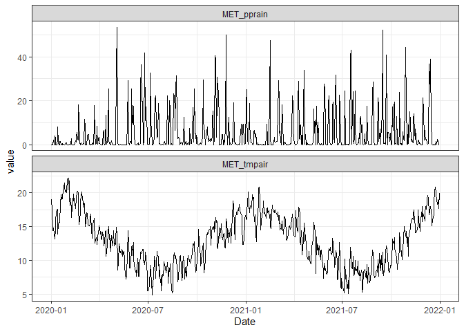
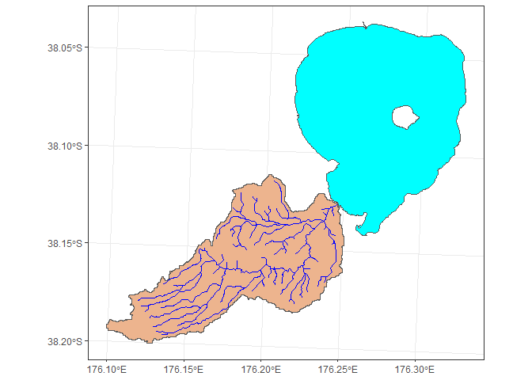
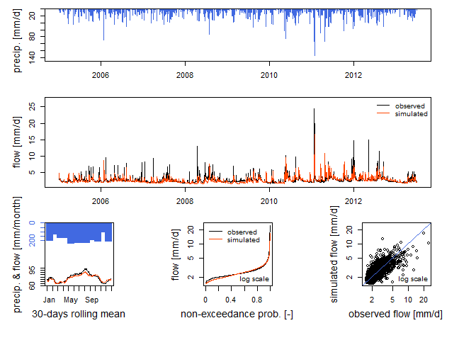

aemetools is designed to work with AEME. It contains a range of functions to assist in setting up simulations for a lake site.
Currently, you can use this to:
- Download meteorological data from ERA5-Land for any point in New Zealand from 1999-2022, or download ERA5-Land netCDF files for any area in the world.
- Set up and run hydrological simulations using the suite of models from the
airGRpackage using catchment, reach and lake data. - Conduct a sensitivity analysis on the parameters for the AEME models.
- Calibrate the AEME models using lake observational data.
Installation
You can install the development version of aemetools from GitHub with:
# install.packages("devtools")
devtools::install_github("limnotrack/aemetools")Download NZ point meteorological data
Currently, there is ERA5-Land data (~9km grid spacing) archived for New Zealand (166.5/-46.6/178.6/-34.5) for the time period 1980-2023 with the main meteorological variables (air temperature, dewpoint temperature, wind u-vector at 10m, wind v-vector at 10m, total precipitation, snowfall, surface level pressure, downwelling shortwave radiation, downwelling longwave radiation) required to drive hydrological and hydrodynamic models. This can be easily downloaded using the example below. There is a parallel switch which allows you to use multiple cores on your computer to speed up the download.
library(aemetools)
lon <- 176.2717
lat <- -38.079
variables <- c("MET_tmpair", "MET_pprain")
met <- get_era5_point(lat = lat, lon = lon, years = 2020:2021,
variables = variables, format = "aeme", parallel = TRUE)
#> Checking if lat/lon point is in the grid...
#> Point is in the grid.
#> Downloading ERA5 variables in parallel... [2024-05-14 14:22:37]
#> Finished downloading ERA5 variables! [2024-05-14 14:22:47]
summary(met)
#> Date MET_tmpair MET_pprain
#> Min. :2020-01-01 Min. : 4.848 Min. : 0.00000
#> 1st Qu.:2020-07-01 1st Qu.: 9.699 1st Qu.: 0.08203
#> Median :2020-12-31 Median :12.729 Median : 0.83959
#> Mean :2020-12-31 Mean :12.845 Mean : 5.10542
#> 3rd Qu.:2021-07-01 3rd Qu.:15.782 3rd Qu.: 5.73168
#> Max. :2021-12-31 Max. :22.176 Max. :53.44960
library(ggplot2)
library(tidyr)
met |>
pivot_longer(cols = c(MET_tmpair, MET_pprain)) |>
ggplot(aes(x = Date, y = value)) +
geom_line() +
facet_wrap(~name, scales = "free_y") +
theme_bw()
Calibrate AEME model
See the vignette here
Sensitivity analysis for AEME models
See the vignette here
Hydrological modelling - Run GR4J model
Here is simple example set up for one of the lake inflows into Lake Rotorua. First, the input for the model are generated using the stream ID (nzsegment), and spatial features (sf objects) of the reaches, lake and catchment (including sub-catchments), observed discharge (if available) meteorological data (air temperature and precipitation). It recursively creates an upstream network using the nzsegment, then combines the subcatchments of all the upstream reaches (sf::st_union()) to calculate the area of the catchment.
data_dir <- system.file("extdata/hydro/", package = "aemetools")
lake <- readRDS(file.path(data_dir, "lake.rds"))
reaches <- readRDS(file.path(data_dir, "reaches.rds"))
catchments <- readRDS(file.path(data_dir, "catchments.rds"))
met <- readRDS(file.path(data_dir, "met.rds"))
obs_flow <- readRDS(file.path(data_dir, "obs_flow.rds"))
FUN_MOD <- airGR::RunModel_GR4J
id <- 4087861 # nzsegment
inputs <- make_GR_inputs(id = id, reaches = reaches, lake = lake,
catchments = catchments, obs_flow = obs_flow, met = met,
lat = lat, FUN_MOD = FUN_MOD,
plot = TRUE)
#> Warning: attribute variables are assumed to be spatially constant throughout
#> all geometries
#> Warning in make_GR_inputs(id = id, reaches = reaches, lake = lake, catchments =
#> catchments, : NA values present. Selecting period with less NA's.
Within the airGR package, there are calibration algorithms which allows you to calibrate the hydrological model if discharge data for the reach is available. The calibrated parameters can be passed to the run_GR function to run the selected model.
#' airGR uses indices to run the model, so first we split our observed data in
#' half (0.5) for calibration and validation periods based on when the
#' observation data starts (which is provided in `inputs$data$start`).
idx_spl <- floor(nrow(inputs$data[inputs$start:nrow(inputs$data), ])
* 0.5)
#' Use a model warmup period as everything before when the observations start.
warmup <- 1:(inputs$start - 1)
# Set the indices for the calibration period
cal_idx <- inputs$start:(idx_spl + inputs$start)
# Run the calibration and assign the output
calib <- calib_GR(inputs = inputs, warmup = warmup, run_index = cal_idx)
#> Grid-Screening in progress (0% 20% 40% 60% 80% 100%)
#> Screening completed (81 runs)
#> Param = 432.681, -2.376, 83.096, 2.384
#> Crit. NSE[Q] = -12.8326
#> Steepest-descent local search in progress
#> Calibration completed (30 iterations, 289 runs)
#> Param = 21807.299, -9.151, 104.585, 2.003
#> Crit. NSE[Q] = 0.4836
# Extract the calibrated parameters
param <- calib$ParamFinalR
# Run the model
output <- run_GR(inputs = inputs, param = param,
warmup = warmup, run_index = cal_idx)
# Plot the output
plot(output, Qobs = inputs$data$Qmm[cal_idx])